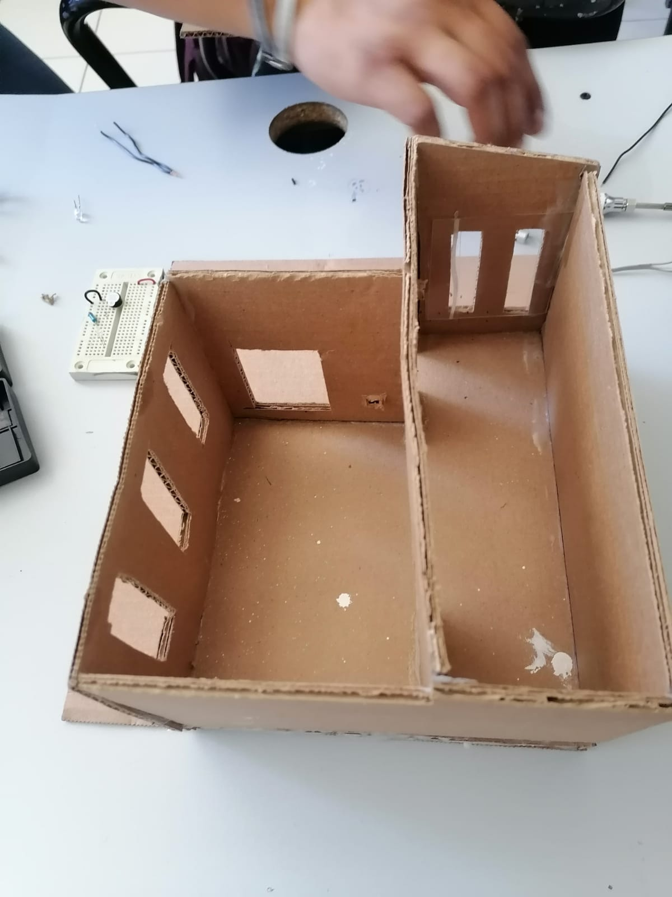
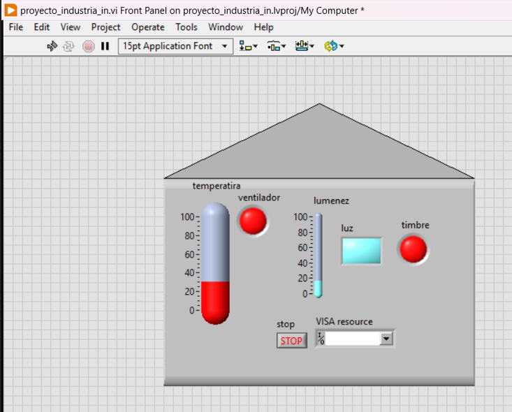
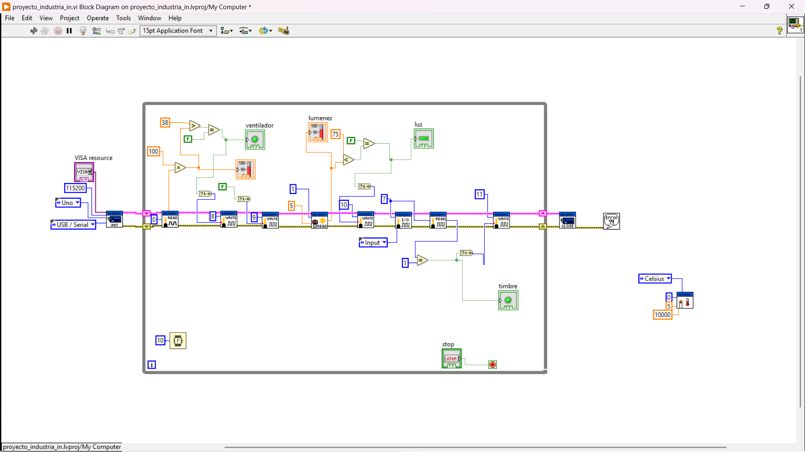

Nuestro Proyecto
Nuestro Proyecto tiene como objetivo desarrollar un sistema de supervisión de variables críticas como la temperatura, la luz y la deteccion de personas en un entorno doméstico, a través de la utilización de sensores adecuados y la creación de una interfaz gráfica intuitiva en LabVIEW, se proporcionará a los usuarios una herramienta eficaz para gestionar el ambiente de su hogar de manera eficiente y cómoda.
Ensable de estructura
Ensable de sensores
Para el comienzo del armado y ensamble del proyecto se inició por medio de la estructura de carton para su respectiva manipulación y acoplo en los parámetros que requerimos para la instalacion de los sensores.
Interfaz
Se procede a realizar la interfaz gráfica para el usuario la cual consta de representaciones de cada uno de los sensores que instalaremos dentro de la casa para el control del ambiente dentro del hogar.
Programa de LabVIEW
En el presente programa realizado en LabVIEW se conectaron un puente H,un lm35,un ldr,un buzer y un led para que sean activados conforme las condiciones de los sensores controlados por el Arduino.